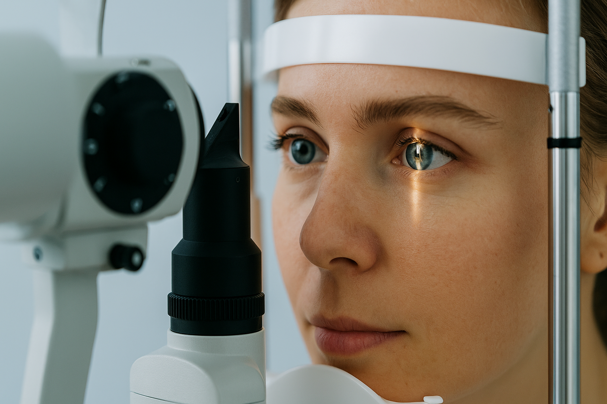

SOS er en basisgruppe ved Københavns Universitet, der uddanner og forbinder medicinstuderende med faget øjensygdomme. Vi arrangerer praksisnære aktiviteter i samarbejde med erfarne speciallæger.

SOS er en studenterforening ved Københavns Universitet for medicinstuderende med interesse for øjenfaget. Vi arbejder for at gøre oftalmologi spændende og tilgængeligt gennem praksis, viden og fællesskab. Vi arrangerer foredrag, workshops og besøg på øjenafdelinger, hvor du kan prøve kræfter med undersøgelser, høre fra erfarne øjenlæger og få indblik i hverdagen som specialist. SOS er både for dig, der allerede drømmer om at blive øjenlæge, og for dig, der bare vil lære mere om syn, øjet og sygdomme i det.
Vi arbejder dagligt for at skabe de bedste faglige arrangementer for dig.
Vi opdaterer løbende vores Facebook-side med nye arrangementer og billeder.